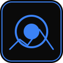

Mac
- ダウンロードした .dmg を開くOpen the downloaded .dmg
- Glimpse を「アプリケーション」フォルダへドラッグするDrag Glimpse into Applications
- アプリケーションから起動する。Apple の確認を受けたアプリなので、そのまま開けますLaunch it from Applications. It is notarized by Apple, so it opens normally

GlimpseGlimpse は写真の選別に特化したデスクトップアプリです。RAW のままでも待たされずに次の1枚へ進めて、途中でやめても続きから再開できます。 Glimpse is a desktop app built for one job: culling. Move to the next frame instantly — even with RAW files — and pick up right where you left off.
サムネイルは裏で並列に作られるので、フォルダを開いたらすぐ見始められます。数万枚でも一覧がもたつきません。 Thumbnails are generated in parallel in the background, so you can start as soon as a folder opens — even with tens of thousands of files.
現像や書き出しをせずに、カメラから取り込んだファイルをそのまま開けます。 Open files straight from the card — no developing or converting first.
NEF · ARW · CR2 · CR3 · RAF · ORF · RW2 · PEF · DNG · SRW · JPEG
付けた印と位置は自動で残ります。次に同じフォルダを開けば、続きの1枚から始まります。残した写真は別フォルダへまとめて書き出せます。 Your marks and position are saved automatically. Reopen the folder to continue from the same frame, then export the keepers to another folder.